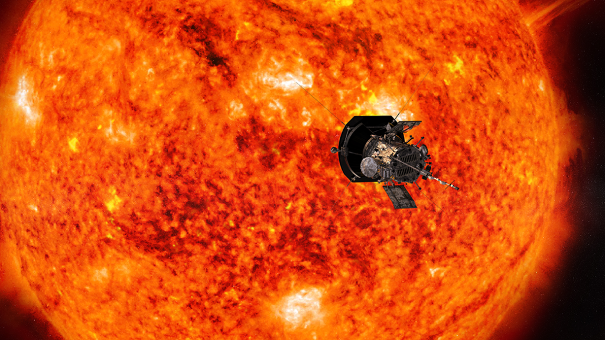
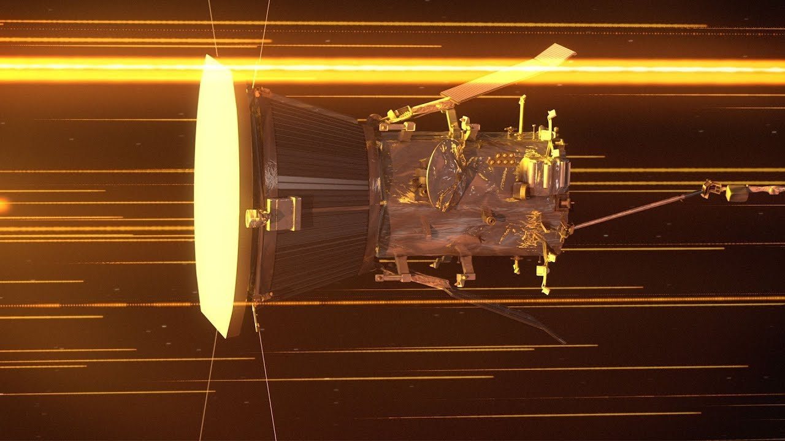
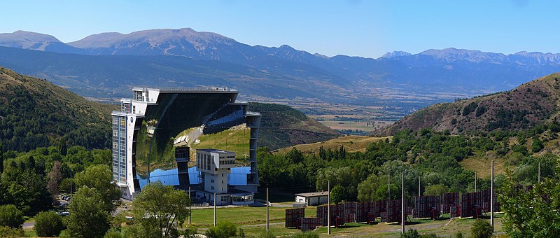
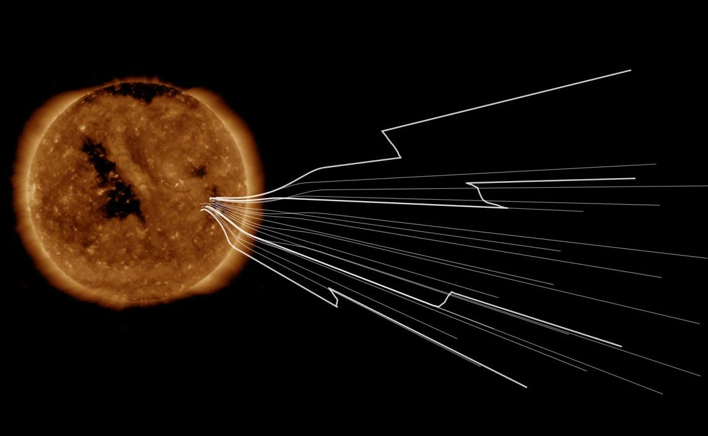
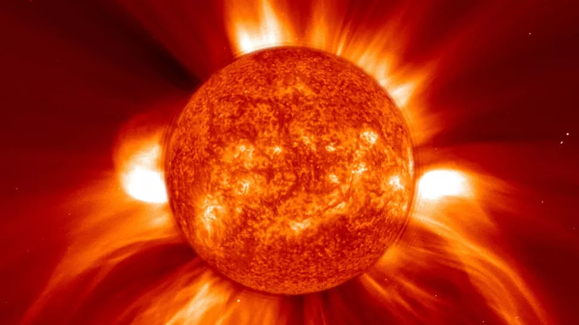

Parker's Journey

On August 12, 2018, the scientists launched Little Parker. Eager to learn more about the sun, he sped off traveling 430,000 miles per hour and made his way closer to the sun traveling in an elliptical orbit. It was mostly smooth sailing, but a few days into his flight, he was met with a solar radiation storm – the very thing that he’d hoped to protect our astronauts from. Much like the tornadoes we experience here on Earth, this type of storm hurls lots of small charged particles across space and requires astronauts to seek shelter to avoid exposure to harsh radiation from the sun. Luckily, the heat shield that the scientists equipped him with kept him safe and allowed him to travel onwards. The Odeillo Solar Furnace had also tested his heat tolerance prior to his launch.

Parker's heat shield against solar radiation storm
The Odeillo Solar Furnace
While moving closer to the sun, Little Parker realized that he was moving much too quickly and decided to take a small detour to Venus. This small stop, not only slowed down his orbit, but also redirected him to move closer to the sun. While passing through Venus, Little Parker collected bits and pieces of data that helped scientists here on Earth understand how the planet’s atmosphere reacts to the sun and its solar cycle.
After Little Parker’s detour, he returned to his original pathway towards the sun. He was able to move into the Alfven critical surface on April 28, 2021. Throughout his journey in the corona, scientists discovered that he kept moving in and out of it. This would prove that the Alfven critical surface wasn’t a round sphere like some scientists had previously thought. There were spikes and valleys that wrinkled its surface, and Little Parker soon discovered a pseudostreamer. A pseudostreamer is a small area that wasn’t chaotic like the rest of the corona. The movement of particles were dominated by magnetic fields in this region, which served as proof that Little Parker had indeed entered the corona.

Image of the corona created by magnetic fields
Little Parker started to see switchbacks — zigzag structures in the magnetic polar lines that were thought to be rare — in solar wind. Then, Parker aided the scientists through searching for the source of the switchbacks, which turned out to be supergranules. Supergranules are networks of cells that cover the sun’s surface. Scientists then proposed that solar wind was caused by the switchbacks matching up with a magnetic funnel that was at the base of the corona.

Switchbacks
Despite the solar flares and coronal mass ejections that Little Parker had come across later in his journey, he was happy to aid the scientists back on Earth. The solar flares did not bother him too much, as he was programmed with sensors that would immediately change his course of direction if they spotted sunlight. These sensors would also prevent the 8 minute message lag from Earth to him, if scientists found him in trouble. The energetic bursts of light and particles from the explosions on the sun’s surface seemed like the fireworks at home to Little Parker. The clouds of solar plasma and magnetic fields from the coronal mass ejections reminded him of the clouds he glimpsed at when he was flying out of the Earth’s atmosphere. Even though he would love to see the scientists up close again, Little Parker was satisfied in pursuing his solar mission, and despite being able to touch the sun, planned to continue flying towards it in hopes to learn more.

A coronal mass Ejection